Stress helpers in MAM, Koren, and Simanim
The table lists differences from MAM in prose verses. Batch 1 is the original set of comparisons, and batch 2 adds the differences found beyond it.
| Verse | Difference | Scan crop | |
|---|---|---|---|
MAMיִהְיֶֽה־לְךָ֩ Korיִהְיֶ֣ה לְךָ֩ | Exod 20:2 p. A38 עליון | Different grouping Koren has munaḥ on יהיה and a space where MAM has maqaf. The telisha qetanna on לך agrees, and neither has a helper. MAM’s note reports MAM’s compound in the printed tradition too, with a meteg on the second yod of יהיה and a maqaf after it for the עליון. MAM doc-note The comparison of Koren’s Decalogues with MAM’s reports this separation, which none of MAM’s עליון texts has. Koren’s printed Decalogues | 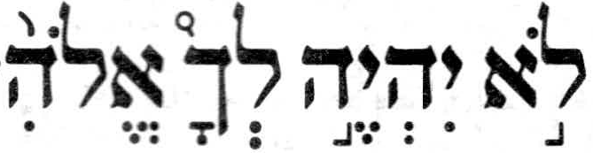 |
MAMוּבִנְךָֽ־וּ֠בִתֶּ֠ךָ Korוּבִנְךָ֣ וּ֠בִתֶּ֠ךָ | Exod 20:9 p. A38 עליון | Different grouping Koren has munaḥ on ובנך and a space where MAM has maqaf. The telisha gedolah on ובתך and its helper on tav agree. MAM’s note reports munaḥ alone on ובנך, with no maqaf and no meteg, in part of the printed tradition, including Heidenheim and Koren, which follows Heidenheim. MAM doc-note The comparison of Koren’s Decalogues with MAM’s reports this separation, which MAM’s תחתון has too. Koren’s printed Decalogues |  |
MAMעַמֻּֽדֵיהֶם֙ Korעַמֻּֽדֵיהֶ֣ם | Exod 27:16 p. 125 | Different accent Koren has munaḥ on he where MAM has pashta. MAM’s note reports munaḥ in the printed tradition. MAM doc-note |  |
MAMאֲשֶׁר֩ Korאֲ֠שֶׁ֠ר | Lev 7:36 p. 162 | Different accent MAM’s note reports telisha gedolah in Koren and lists a doubled form. The scanned copy has the doubled form. MAM doc-note | 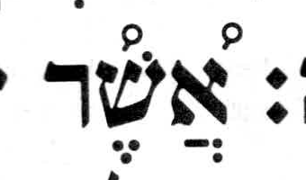 |
MAMקִ֞֠רְב֞֠וּ KorSimקִ֠רְב֞וּ | Lev 10:4 Kor p. 166 Sim p. 175 | Geresh or gershayim + telisha gedolah Kor and Sim have telisha gedolah on qof and gershayim on bet. MAM has both marks on both letters. MAM doc-note MAM’s notes describe the two cases where geresh or gershayim and telisha gedolah belong on different letters. MAM notes on telisha gedolah | Kor 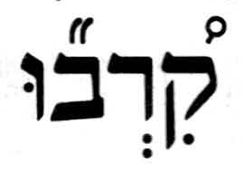 Sim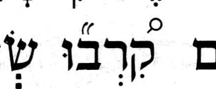 |
MAMשְׁ֚תַּיִם Korשְׁתַּ֙יִם֙ | Lev 23:17 p. 190 | Different accent MAM’s note gives the doubled pashta for the printed tradition and for Koren. MAM doc-note | 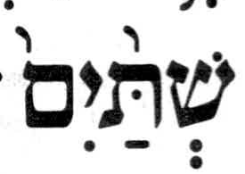 |
MAMשָׁ֩טוּ֩ Simשָׁטוּ֩ | Num 11:8 p. 236 | no SH in Sim The MAM doc-note gives penultimate stress for MAM and Koren and final stress for the Simanim Tanakh, following Sephardic and Yemenite reading traditions. MAM doc-note | 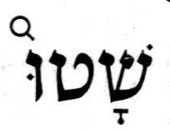 |
MAMוּלְמַטֵּה֙ KorSimוּלְמַטֵּ֖ה | Num 34:20 Kor p. 266 Sim p. 280 | Different accent Kor and Sim have tipeḥa on tet where MAM has pashta. | Kor 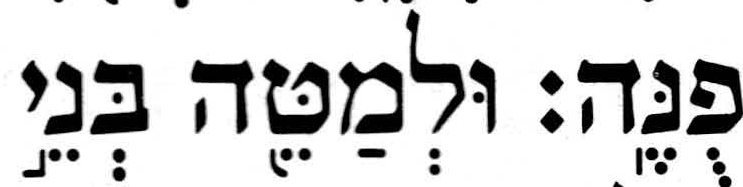 Sim |
MAMלֹ֣א יִהְיֶֽה־לְךָ֩ Korלֹ֣א־יִֽהְיֶ֣ה לְךָ֩ | Deut 5:6 p. A39 עליון | Different grouping Koren’s maqaf joins לא to יהיה and a space precedes לך, where MAM’s maqaf joins יהיה to לך. The telisha qetanna on לך agrees, and neither has a helper. MAM’s note reports MAM’s compound, with its maqaf after יהיה, in the printed tradition too. MAM doc-note The comparison of Koren’s Decalogues with MAM’s reports this grouping, which MAM’s תחתון has too, though with a merkha on יהיה where Koren has a munaḥ. Koren’s printed Decalogues | 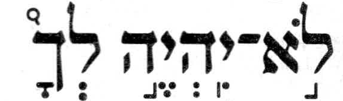 |
MAMוְיוֹם֙ Simוְי֨וֹם | Deut 5:13 p. 298 תחתון | Different accent The Simanim Tanakh has qadma on yod where MAM has pashta. The comparison of the Simanim Tanakh’s Decalogues with MAM’s finds this qadma the only difference in its Deuteronomy תחתון, and very likely the edition’s error: it is the עליון’s accent on this chanted word, without the עליון’s geresh on the next one. The Simanim editions’ printed Decalogues | 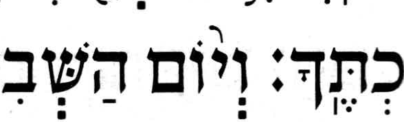 |
MAMוַיֵּתֵא֙ Korוַיֵּ֙תֶא֙ | Deut 33:21 p. 326 | SH in Kor only MAM’s note reports final stress in MAM. For Koren, as for Heidenheim’s edition, which follows Ein HaQore, the note reports a tsere under yod with the pashta’s stress helper and a segol under tav, as the crop shows. MAM doc-note | 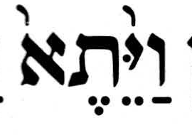 |
MAMאַתֶּם֙ Korאַתֶּ֤ם | Josh 1:11 p. 1 | Different accent Koren has mahapakh on tav where MAM has pashta. | 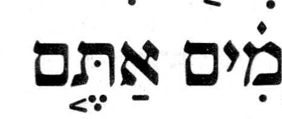 |
MAMלִּֽירִיחוֹ֙ Korלִֽירִיח֣וֹ | Josh 8:2 p. 11 | Different accent Koren has munaḥ on ḥet where MAM has pashta. |  |
MAMכַּֽאֲשֶׁר֙ Korכַּֽאֲשֶׁר֩ | Josh 14:11 p. 24 | Different accent Koren has telisha qetanna on resh where MAM has pashta. | 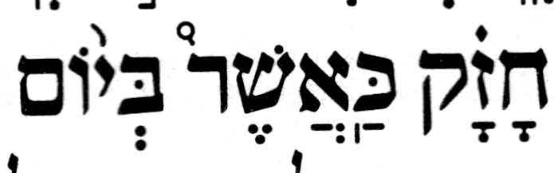 |
MAMוְנָסַב֩ Korוְ֠נָסַ֠ב | Josh 15:10 p. 25 | Different accent Koren has telisha gedolah on vav, with a helper on samekh, where MAM has telisha qetanna. | 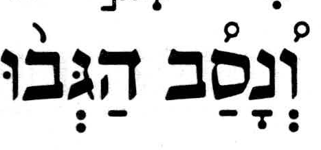 |
MAMוָ֠אֶקַּ֠ח Korוָֽ֠אֶקַּח֠ | Josh 24:3 p. 40 | Different SH placement Koren has the telisha gedolah helper on the final ḥet. This is almost certainly an error in Koren, since the helper belongs on the first letter of the stressed syllable. MAM and the Simanim Tanakh have the helper on qof, the first letter of the final syllable. | 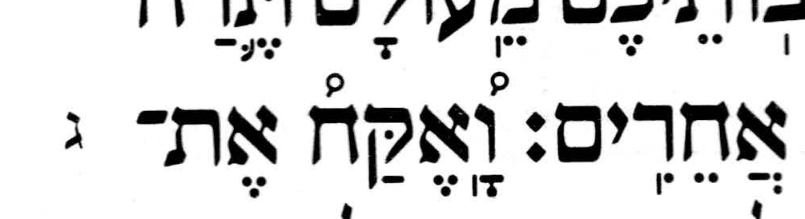 |
MAMוַיֹּ֩אמְרוּ֩ Korוַיֹּֽאמְרוּ֩ | Judg 18:19 p. 77 | no SH in Kor Koren has final telisha qetanna and meteg on yod. MAM and the Simanim Tanakh have the telisha qetanna helper on yod. MAM’s note gives final stress for the printed tradition and Koren. MAM doc-note | 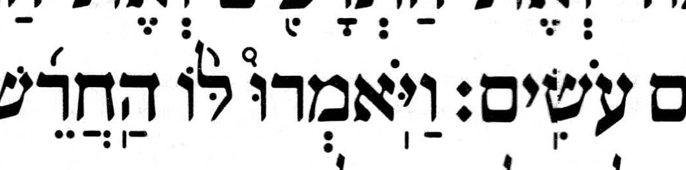 |
MAMוַיֹּֽאמְרוּ֙ Simוַיֹּֽאמְר֨וּ | Judg 21:16 p. 445 | Different accent The Simanim Tanakh has qadma on resh where MAM has pashta. |  |
MAMלֹא֙ Korלֹ֔א | 1Sam 2:16 p. 91 | Different accent Koren has zaqef on lamed in both the ketiv in the text and the qere in the margin. MAM has pashta on the qere. | 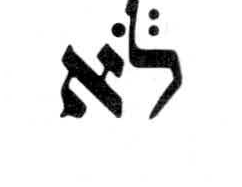 |
MAMאִֽיכָבוֹד֙ Korאִ֤י כָבוֹד֙ | 1Sam 4:21 p. 95 | Different grouping Koren has two chanted words, with mahapakh on the first and pashta on the second, where MAM has one. The pashta agrees, and neither has a helper. | 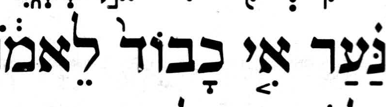 |
MAMוְיָשֹׁב֙ Korוְיָשֹׁ֤ב | 1Sam 29:4 p. 138 | Different accent Koren has mahapakh on shin where MAM has pashta. | 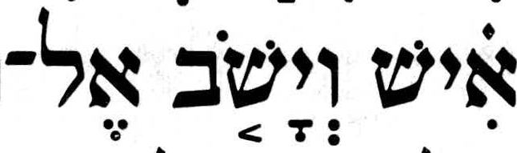 |
MAMוַיֵּבְךְּ֙ KorSimוַיֵּ֙בְךְּ֙ | 2Sam 3:32 Kor p. 146 Sim p. 511 | redundant SH in KorSim Kor and Sim have a pashta helper on yod within the final syllable. MAM indicates final stress with a single pashta. | Kor 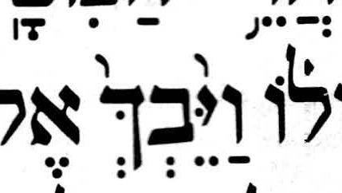 Sim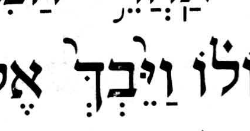 |
MAMאֶל־מוּל֙ Korאֶל־מ֨וּל | 2Sam 11:15 p. 156 | Different accent Koren has qadma on mem where MAM has pashta. | 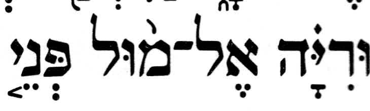 |
MAMמִדָּן֙ Korמִדָּ֣ן | 2Sam 17:11 p. 169 | Different accent Koren has munaḥ on dalet where MAM has pashta. |  |
MAMאֱלֹהֵי֙ Korאֱלֹהֵ֤י | 1Kgs 18:36 p. 230 | Different accent Koren has mahapakh on he where MAM has pashta. |  |
MAMוְהִנֵּה֙ Korוְהִנֵּ֤ה | 2Kgs 1:9 p. 241 | Different accent Koren has mahapakh on nun where MAM has pashta. |  |
MAMוַיִּשְׁלַח֙ Korוַיִּשְׁלַ֤ח | 2Kgs 5:8 p. 248 | Different accent Koren has mahapakh on lamed where MAM has pashta. |  |
MAMוַיִּוָּעַץ֙ Korוַיִּוָּעַ֤ץ | 2Kgs 6:8 p. 250 | Different accent Koren has mahapakh on ayin where MAM has pashta. | 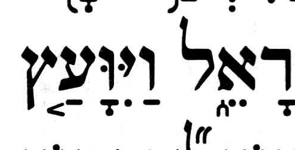 |
MAMוַיֹּ֙אמֶר֙ Korוַיֹּ֣אמֶר | 2Kgs 20:14 p. 279 Second occurrence | Different accent Koren has munaḥ on yod. | 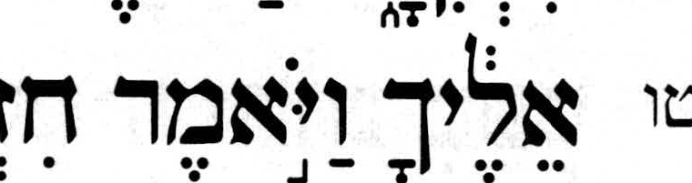 |
MAMוְשָׁפַלְתְּ֙ KorSimוְשָׁפַ֙לְתְּ֙ | Isa 29:4 Kor p. 320 Sim p. 696 | redundant SH in KorSim Kor and Sim have a pashta helper on pe within the final syllable. MAM indicates final stress with a single pashta. | Kor 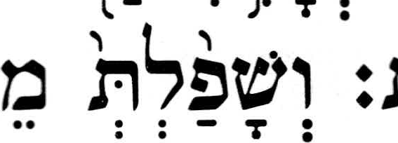 Sim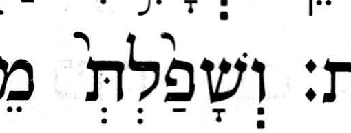 |
MAMתוֹסִ֙יפִי֙ Korתֽוֹסִיפִי֙ | Isa 47:1 p. 341 | no SH in Kor Koren also has a meteg on initial tav. | 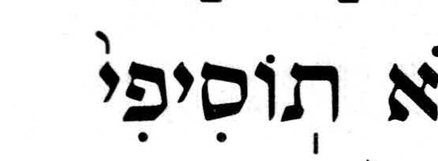 |
MAMתוֹסִ֙יפִי֙ Korתֽוֹסִיפִי֙ | Isa 47:5 p. 341 | no SH in Kor Koren also has a meteg on initial tav. | 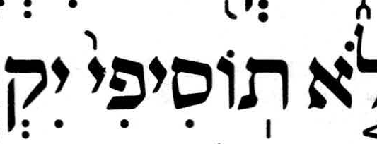 |
MAMאָמַרְתְּ֙ KorSimאָמַ֙רְתְּ֙ | Isa 47:10 Kor p. 342 Sim p. 719 | redundant SH in KorSim Kor and Sim have a pashta helper on mem within the final syllable. MAM indicates final stress with a single pashta. | Kor 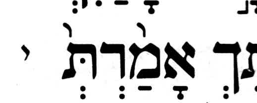 Sim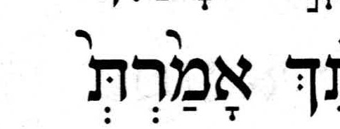 |
MAMוְיָנַקְתְּ֙ KorSimוְיָנַ֙קְתְּ֙ | Isa 60:16 Kor p. 354 Sim p. 733 | redundant SH in KorSim Kor and Sim have a pashta helper on nun within the final syllable. MAM indicates final stress with a single pashta. | Kor 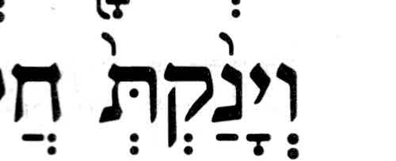 Sim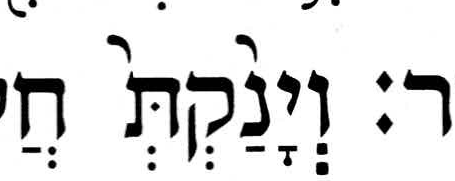 |
MAMרָצֹ֙חַ֙ Korרָצֹחַ֙ | Jer 7:9 p. 373 | no SH in Kor | 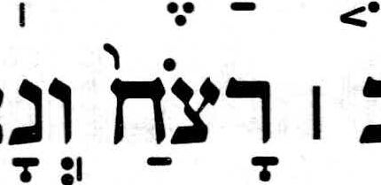 |
MAMאֶת־רֵעֵ֙הוּ֙ Korאֶת־רֵעֵ֣הוּ | Jer 9:7 p. 376 | Different accent Koren has munaḥ on ayin. | 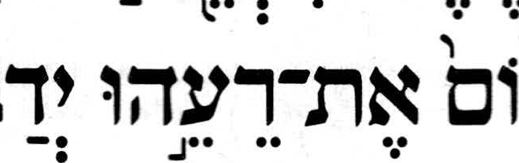 |
MAMיֹשַׁבְתְּ֙ Korיֹשַׁ֣בְתְּ | Jer 22:23 p. 395 Opening qere | Different accent Koren has munaḥ on shin in both the opening ketiv in the text and the qere in the margin. MAM has a single pashta on the qere. | 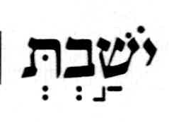 |
MAMמַה־נֵּחַנְתְּ֙ KorSimמַה־נֵּחַ֙נְתְּ֙ | Jer 22:23 Kor p. 395 Sim p. 777 | redundant SH in KorSim Kor and Sim have a pashta helper on ḥet within the final syllable. MAM indicates final stress with a single pashta. | Kor 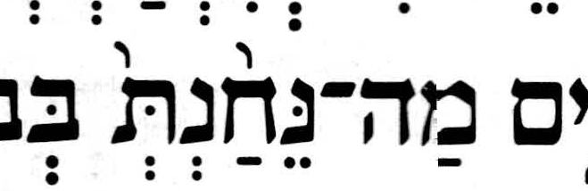 Sim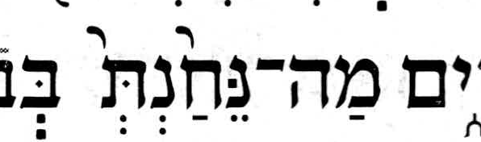 |
MAMיֹשַׁבְתְּ֙ Simיֹשַׁ֙בְתְּ֙ | Jer 22:23 p. 777 Opening qere | redundant SH in Sim The opening qere has pashta in MAM and the Simanim Tanakh, with a helper on shin in the Simanim Tanakh. Koren (p. 395) differs in the accent itself, with munaḥ on shin. | Kor Sim 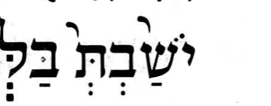 |
MAMיַעֲקוֹב֩ KorSimיַֽ֠עֲק֠וֹב | Jer 33:26 Kor p. 416 Sim p. 800 | Different accent Kor and Sim have telisha gedolah on yod, with a helper on qof, where MAM has telisha qetanna. | Kor 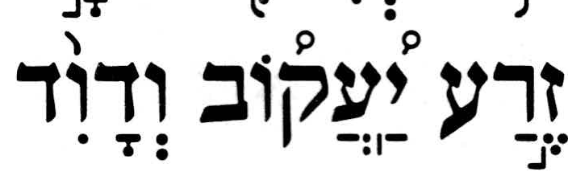 Sim |
MAMכׇּל־הָרָעָה֙ Korכׇּל־הָ֣רָעָ֔ה | Jer 41:11 p. 429 | Different accent Koren has munaḥ on the first he and zaqef on ayin where MAM has pashta. |  |
MAMוַיְהִי֩ Korוַ֠יְהִ֠י | Jer 43:1 p. 431 | Different accent Koren has telisha gedolah on vav, with a helper on he, where MAM has telisha qetanna. | 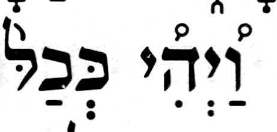 |
MAMוְתַ֩מּוּ֩ Korוְתַמּוּ֩ | Jer 44:27 p. 434 | no SH in Kor The MAM doc-note attributes the doubled telisha qetanna to the Aleppo Codex. MAM doc-note | 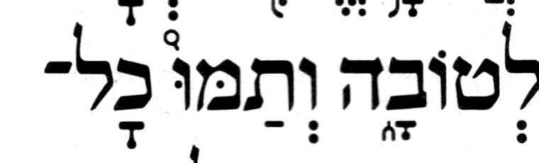 |
MAMאֵין֙ Korאֵ֣ין | Jer 49:1 p. 439 First occurrence | Different accent Koren has munaḥ on alef where MAM has pashta. |  |
MAMוְגַם־נִלְכַּדְתְּ֙ KorSimוְגַם־נִלְכַּ֙דְתְּ֙ | Jer 50:24 Kor p. 443 Sim p. 829 | redundant SH in KorSim Kor and Sim have a pashta helper on kaf within the final syllable. MAM indicates final stress with a single pashta. | Kor 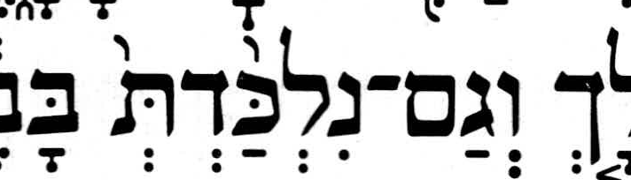 Sim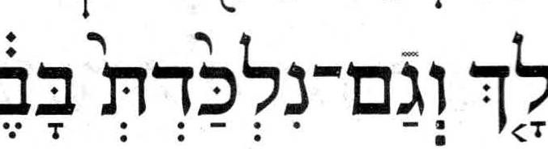 |
MAMשֹׁכַנְתְּ֙ KorSimשֹׁכַ֙נְתְּ֙ | Jer 51:13 Kor p. 445 Sim p. 831 | redundant SH in KorSim Kor and Sim have a pashta helper on kaf within the final syllable. MAM indicates final stress with a single pashta. Koren has this form in its pointed margin qere. | Kor 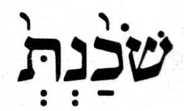 Sim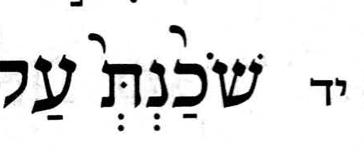 |
MAMבַּעֲשׂ֩וֹתִי֩ Korבַּֽעֲשׂוֹתִי֩ | Ezek 5:15 p. 458 | no SH in Kor The MAM doc-note attributes the doubled telisha qetanna to the Aleppo and Leningrad codices. Koren also has a meteg on bet. MAM doc-note | 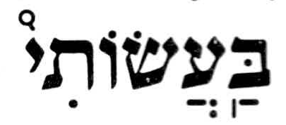 |
MAMכֵּ֠לַ֠י Korכֵּלַ֨י | Ezek 12:7 p. 466 | Different accent Koren has qadma on lamed, before geresh on the next chanted word. | 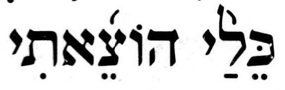 |
MAMלֹֽא־זָכַרְתְּ֙ KorSimלֹֽא־זָכַ֙רְתְּ֙ | Ezek 16:43 Kor p. 473 Sim p. 863 | redundant SH in KorSim Kor and Sim have a pashta helper on kaf within the final syllable. MAM indicates final stress with a single pashta. Koren has this form in its pointed margin qere. | Kor 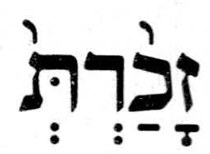 Sim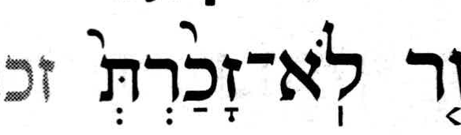 |
MAMפִּלַּלְתְּ֙ KorSimפִּלַּ֙לְתְּ֙ | Ezek 16:52 Kor p. 473 Sim p. 863 | redundant SH in KorSim Kor and Sim have a pashta helper on the first lamed within the final syllable. MAM indicates final stress with a single pashta. | Kor 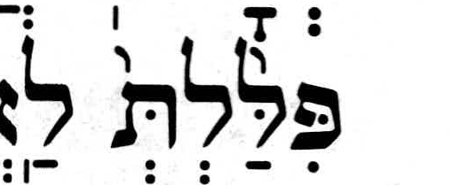 Sim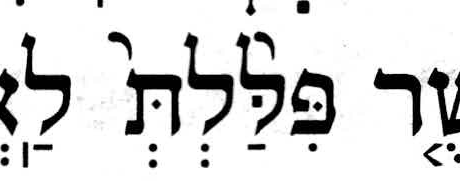 |
MAMוְנִכְלַמְתְּ֒ KorSimוְנִכְלַ֒מְתְּ֒ | Ezek 16:61 Kor p. 474 Sim p. 864 | redundant SH in KorSim Kor and Sim have a segolta helper on lamed within the final syllable. MAM indicates final stress with a single segolta. | Kor Sim  |
MAMבִּמְקוֹם֙ Korבִּמְק֤וֹם | Ezek 17:16 p. 475 | Different accent Koren has mahapakh on qof where MAM has pashta. |  |
MAMאַתֶּם֙ Korאַתֶּ֤ם | Ezek 18:2 p. 476 | Different accent Koren has mahapakh on tav where MAM has pashta. |  |
MAMבַסּ֙וּגַר֙ Korבַסּוּגַר֙ | Ezek 19:9 p. 478 | no SH in Kor MAM’s note gives final stress for the Leningrad Codex and other manuscripts, and for the printed tradition and Koren. MAM doc-note | |
MAMאַתֶּם֩ Korאַתֶּ֨ם | Ezek 20:31 p. 480 | Different accent Koren has qadma on tav where MAM has telisha qetanna. MAM’s note reports qadma on tav in the printed tradition. MAM doc-note |  |
MAMוְיָשַׁבְתְּ֙ KorSimוְיָשַׁ֙בְתְּ֙ | Ezek 23:41 Kor p. 487 Sim p. 878 | redundant SH in KorSim Kor and Sim have a pashta helper on shin within the final syllable. MAM indicates final stress with a single pashta. | Kor Sim |
MAMדְּדָן֙ Korדְּדָ֖ן | Ezek 27:20 p. 492 | Different accent Koren has tipeḥa on the second dalet where MAM has pashta. | |
MAMבְּכֹל֙ Korבְּכׇל־ | Ezek 31:12 p. 498 | Different accent Koren has a maqaf to אפיקי where MAM has pashta. |  |
MAMוּ֜֠לְאֵ֜֠לֶּה KorSimוּ֠לְאֵ֜לֶּה | Ezek 48:10 Kor p. 526 Sim p. 921 | Geresh or gershayim + telisha gedolah Kor and Sim have telisha gedolah on vav and geresh on alef. MAM has both marks on both letters. MAM’s note reports Koren’s placement. MAM doc-note | Kor Sim |
MAMזָנַח֙ Korזָנַ֤ח | Hos 8:5 p. 536 | Different accent Koren has mahapakh on nun where MAM has pashta. | |
MAMתִרְגַּ֙לְתִּי֙ Korתִּרְגַּ֣לְתִּי | Hos 11:3 p. 538 | Different accent Koren has munaḥ on gimel and a dagesh in initial tav. | |
MAMלִירוּשָׁלַ֙͏ִם֙ Korלִירֽוּשָׁ֙לַ͏ִם֙ | Zech 1:16 p. 574 | Different SH placement Koren puts the pashta helper on shin. MAM and the Simanim Tanakh put it on lamed. | |
MAMוְהָלַכְתְּ֙ Simוְהָלַ֙כְתְּ֙ | Ruth 2:9 p. 1228 Second occurrence | redundant SH in Sim At the second occurrence, after וצמת, the Simanim Tanakh has a pashta helper on lamed. MAM and Koren (p. 158) have a single pashta. In MAM’s prose verses, twelve other chanted words have a single pashta and a final syllable ending in two consonants with sheva. Koren has pashta in eleven of them, each with a helper, so Koren’s editors would likely consider the omission here an error. The first occurrence has munaḥ on lamed in all three sources. | Kor Sim |
MAMוַיֵּשְׁתְּ֙ KorSimוַיֵּ֙שְׁתְּ֙ | Ruth 3:7 Kor p. 160 Sim p. 1230 | redundant SH in KorSim Kor and Sim have a pashta helper on yod within the final syllable. MAM indicates final stress with a single pashta. | Kor Sim |
MAMאֶסְתֵּר֙ Korאֶסְתֵּ֖ר | Esth 4:10 p. 192 | Different accent Koren has tipeḥa on tav where MAM has pashta. | |
MAMוַיֹּ֗אמֶר Korוַ֠יֹּ֠אמֶר | Esth 6:1 p. 193 | Different accent MAM’s note reports the doubled telisha gedolah for Koren and the Simanim Tanakh. The scanned Koren copy has the doubled form. The scanned Simanim Tanakh has revia, in agreement with MAM. MAM doc-note | |
MAMפַּרְזְלָא֙ Korפַּרְזְלָ֤א | Dan 2:43 p. 207 First occurrence | Different accent Koren has mahapakh on lamed where MAM has pashta. | |
MAMבְּמַלְכוּתָם֩ KorSimבְּ֠מַלְכוּתָ֠ם | Neh 9:35 Kor p. 262 Sim p. 1342 | Different accent Kor and Sim have telisha gedolah on bet, with a helper on tav, where MAM has telisha qetanna. | Kor Sim Sim |
MAMלָשֶׁ֙בֶת֙ Korלָשֶׁ֤בֶת | Neh 11:1 p. 264 | Different accent Koren has mahapakh on shin. | |
MAMוְיוֹיָדָע֙ Korוְיֽוֹיָדָ֖ע | Neh 12:11 p. 266 | Different accent Koren has tipeḥa on dalet where MAM has pashta. |  |
MAMלִמְלִ֙יכוּ֙ Korלִמְלִיכוּ֙ | Neh 12:14 p. 266 | no SH in Kor The pointed Koren qere in the margin has final pashta only. | |
MAMוַֽאֲבָנִים֙ Korוַֽאֲבָנִ֛ים | 1Chr 22:14 p. 307 | Different accent Koren has tevir on nun where MAM has pashta. |  |
MAMמְרָרִי֙ Korמְרָרִ֖י | 1Chr 24:26 p. 309 | Different accent Koren has tipeḥa on the second resh where MAM has pashta. |  |
MAMבַּתִּים֙ Korבַּתִּ֖ים | 2Chr 2:9 p. 320 First occurrence | Different accent Koren has tipeḥa on tav where MAM has pashta. | |
MAMשְׁלֹמֹה֙ Korשְׁלֹמֹ֖ה | 2Chr 8:3 p. 329 | Different accent Koren has tipeḥa on mem where MAM has pashta. |  |
MAMחָשַׁק֙ Korחָשַׁ֜ק | 2Chr 8:6 p. 329 | Different accent Koren has geresh on shin where MAM has pashta. | |
MAMלָֽבְשָׁה֙ Korלָֽבְשָׁ֤ה | 2Chr 24:20 p. 352 | Different accent Koren has mahapakh on shin where MAM has pashta. |  |
MAMעַתָּה֙ KorSimעַתָּ֨ה | 2Chr 29:31 Kor p. 360 Sim p. 1447 | Different accent Kor and Sim have qadma on tav where MAM has pashta. MAM’s note reports qadma in the printed tradition, and likewise in BHS, Mechon Mamre and the Simanim Tanakh. MAM doc-note | Kor Sim Sim |
MAMאֱלֹהֵי֙ Korאֱלֹהֵ֤י | 2Chr 30:6 p. 361 | Different accent Koren has mahapakh on he where MAM has pashta. |


The Koren Classic Tanakh, Classic Edition, Large Size. Koren Publishers Jerusalem Ltd. © 1962, 2020 for font and text design.
Torah Nevi’im Ketuvim Simanim, Elḥanan Yosef edition, Jerusalem 5775. © 5783 Shmuel Meir Riachi and Feldheim Publishers.
The crops show Koren and the Simanim Tanakh at the locations compared in the table.
MAM text from MAM-with-doc, based on Miqra according to the Masorah at Hebrew Wikisource, CC BY-SA 4.0.